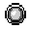
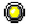
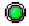
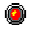

Подключения баз данных
Подключения баз данных
Генератор отчетом будет почти бесполезным, если он не будет иметь методов показа информации содержащейся в базах данных. Он сможет делать отчеты, только которые не связаны с базами данных. Подключение данных в Rave одна из наиболее мощных возможностей, и не столько, поскольку может иметь доступ до широкого круга баз данных и поддержанных методов, а простотой шагов требуемых для создания отчета.
Подключение базы данных в Rave это первичный оплот для подключения к базе с помощью SQL DataViews.
Создание подключения к базе данных
Для создания нового подключения к базе данных, щелкните по иконке DataView в панели отчета, это вызовет помощника Data Connection Wizard. Первый шаг это выбор Database Connection из списка доступных параметров. Когда будете готовы, нажмите на кнопку Next.
После нажатия на кнопку Next, второй шаг помощника покажет доступные типы подсоединений. Выбор зависит от различных Rave DIBL Links установленных на вашей системе. DIBL означает Database Independent Layer. Это патентованная система, которая позволяет взаимодействие с базами данных, независимое от типа баз данных установленных в вашей системе (это может быть SQL Server, Interbase, Oracle или другое).
В главной папке Rave, есть папка называемая DIBLLinks. Внутри ее есть, какое то количество файлов с расширением rvd. Эти файлы загружаются при старте приложения. В зависимости от количества файлов, количество доступных подключений варьируется.
Это дает возможность иметь много типов подключений, показываемых в диалоге Database Connection Type. Это позволяет пользователю решить, какой тип подключения наиболее подходит. Меньшее количество типов может показываться в зависимости от того, какие драйверы были установлены.
Когда тип подключения выбран, на следующем экране будут запрошены подробности подключения. Это различается от одного к другому, но обычно содержит путь к базе данных, имя сервера, если база данных не локальная и необязательное имя пользователя и пароль доступа к серверу.
После создания подключения, оно появится в дереве проектов, откуда оно становится доступным. Свойства для подключения базы данных, также могут быть просмотрены, аналогично другим компонентам, выбором подключения в панели дерева проектов.
Есть несколько свойств, которые специфические для компонента Database. Одним из наиболее важных свойств являются свойства AuthDesign и AuthRun. Во многих случаях, платформа (и сервер), на которой разрабатывается отчет, и платформа на которой выполняется приложение, различаются. Обычно, одна из характеристик, которая часто изменяется это коды доступа к серверу (имя пользователя и пароль). Rave был спроектирован с этим учетом, и задача распространения приложения становится проще. Для этого, свойства AuthDesign и AuthRun можно использовать для разделения этапов разработки и выполнения (распространения - deployment). AuthDesign содержит параметры, которые были указаны при создании компонента Database с помощью помощника или были, затем изменены в панели свойств. AuthRun содержит информацию для распространения.
LinkType представляет тип, который был выбран при создании подключения базы данных. Снова, подобно другим компонентам, есть несколько общих свойств, таких как Name, FullName и Description и другие, которые мы не будем повторно объяснять.
Компонент DirectDataViews (только в BE)
DirectDataViews предоставляет ссылку к подключениям данных, расположенных в других приложениях. Когда DirectDataView создан, показывается список всех доступных компонент подключений данных. Значение свойства Name комонент подключения данных предоставляет связь между подключением и DirectDataView (через свойство ConnectionName в Rave). При подключении к подключению данных, которые имеют обработчики событий, Вы должны иметь приложение запущенным и форму, содержащую компоненты подключения данных созданной.
Компонент DriverDataViews
DriverDataViews выполняет те же самые функции, как и DirectDataViews, за исключением, что самодостаточны и обычно получают свои данные из выражения SQL. DriverDataViews также требует использование действительного подключения данных.
как только подключение базы данных установлено, щелкните на New Data Object для создания нового DriverDataView.
Помощник проведет вас через необходимые шаги для создания законченной конфигурации. После выбора DriverDataView в диалоге, выберите подключение базы данных, к которому Вы подсоединяетесь. Если соединение пройдет успешно, помощник затем покажет диалог Query Editor. Перед продолжением объяснения DriverDataView, немного рассмотрим редактор запросов (Query Editor).
Редактор свойств запросов
Редактор свойств запросов используется для построения выражения SQL, которое возвратит набор данных из базы данных.
Есть два пути использования редактора. Первый путь дает преимущества графического интерфейса для построения SQL выражения. С левой стороны диалога есть список таблиц доступных в текущей базе данных. Путем простого перетягивания и бросания из списка в серую область, создается выражение SQL.
Как только объект таблицы появится, щелкните по рамке, будет определен список полей, которые появятся в наборе данных. По умолчанию отмечено символом "*", что означает, что должны быть возвращены все поля.
Для выбора отдельных полей используйте tick (Примечание переводчика: из книги неясно, что это такое, наверно какой то маркер) для вашего выбора. Таблицы также можно связать (joined). Для выполнения этого, просто перетяните другую таблицу на эту и затем нарисуйте линии связи из одного поля первой таблицы в другое поле второй таблицы (рисунок выше показывает связь между полем PRODUCTID таблицы BUGS и полем PRODUCTID таблицы PRODUCTCODES {Примечание переводчика: нет такого рисунка в книге}). Для просмотра результат, выберите закладку Results и данные будут показаны в гриде.
Как альтернатива, редактор можно использовать для прямого написания текста SQL запроса. Для этого, нажмите кнопку Editor, который появится внизу. Для ввода своего выражения, отметьте "User Defined SQL" и введите свое выражение.
Как только запрос будет создан, нажмите кнопку Ok, для возврата управления редактор Rave.
Компонент SQL Data View теперь должен появиться в дереве проекта. Нажатие на символ +, покажет список всех полей, которые были выбраны в SQL выражении. Свойства для каждого поля могут быть назначены в панели свойств.
Несмотря на то, что поля можно поместить в отчет с помощью соответствующих компонент из закладки Report, много проще работать напрямую с деревом проектов. При нажатой клавише CTRL, поля можно перетянуть напрямую из дерева проекта и бросить на форму дизайнера.
После того как DirectDataView будет настроен с помощью Query Editor, никакие другие свойства не требуются для доступа к данным.
Панель состояния
в самом низу окна RAVE расположена панель состояния. Панель состояния некоторую информацию о выбранном текущем элементе. Так что, смотрите иногда туда.
Индикатор Data Connection предоставляет информацию о состоянии системы данных Rave, изменяя цвет светодиодного индикатора.
Цвет LED Состояние
Серый  Подключение не активно
Желтый  Подключение активно, но ожидает ответа
Зеленый  Подключение активно и занято
Красный  Подключение активно, но превышено время ожидания
X и Y показывают координаты указателя мыши. Подвигайте мышь и посмотрите за показаниями. Когда графический примитив бросается на страницу, размер примитива появляется после создания и показывается как dX и dY позиции. "d" означает дельта.